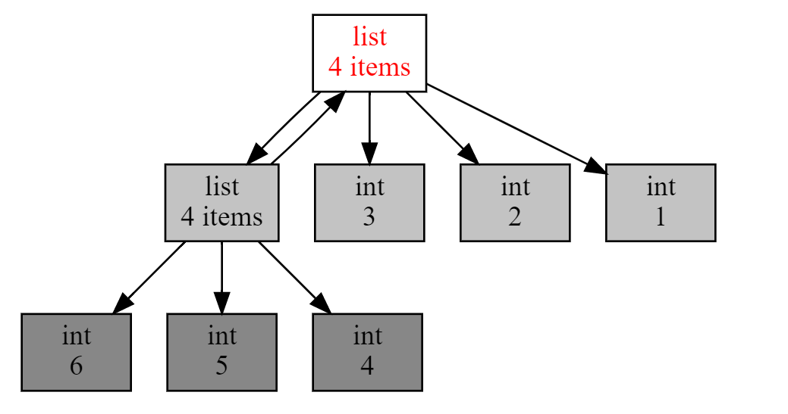
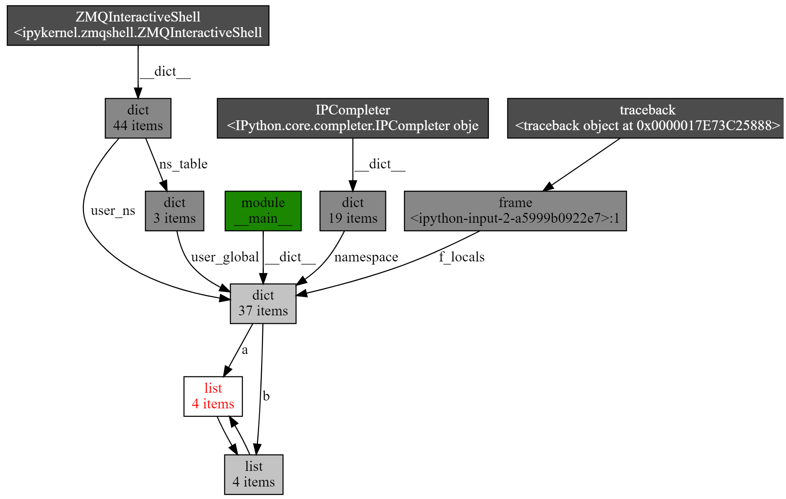

- 00 开篇词 从工程的角度深入理解Python.md.html
- 01 如何逐步突破，成为Python高手？.md.html
- 02 Jupyter Notebook为什么是现代Python的必学技术？.md.html
- 03 列表和元组，到底用哪一个？.md.html
- 04 字典、集合，你真的了解吗？.md.html
- 05 深入浅出字符串.md.html
- 06 Python “黑箱”：输入与输出.md.html
- 07 修炼基本功：条件与循环.md.html
- 08 异常处理：如何提高程序的稳定性？.md.html
- 09 不可或缺的自定义函数.md.html
- 10 简约不简单的匿名函数.md.html
- 11 面向对象（上）：从生活中的类比说起.md.html
- 12 面向对象（下）：如何实现一个搜索引擎？.md.html
- 13 搭建积木：Python 模块化.md.html
- 14 答疑（一）：列表和元组的内部实现是怎样的？.md.html
- 15 Python对象的比较、拷贝.md.html
- 16 值传递，引用传递or其他，Python里参数是如何传递的？.md.html
- 17 强大的装饰器.md.html
- 18 metaclass，是潘多拉魔盒还是阿拉丁神灯？.md.html
- 19 深入理解迭代器和生成器.md.html
- 20 揭秘 Python 协程.md.html
- 21 Python并发编程之Futures.md.html
- 22 并发编程之Asyncio.md.html
- 23 你真的懂Python GIL（全局解释器锁）吗？.md.html
- 24 带你解析 Python 垃圾回收机制.md.html
- 25 答疑（二）：GIL与多线程是什么关系呢？.md.html
- 26 活都来不及干了，还有空注意代码风格？！.md.html
- 27 学会合理分解代码，提高代码可读性.md.html
- 28 如何合理利用assert？.md.html
- 29 巧用上下文管理器和With语句精简代码.md.html
- 30 真的有必要写单元测试吗？.md.html
- 31 pdb & cProfile：调试和性能分析的法宝.md.html
- 32 答疑（三）：如何选择合适的异常处理方式？.md.html
- 33 带你初探量化世界.md.html
- 34 RESTful & Socket：搭建交易执行层核心.md.html
- 35 RESTful & Socket：行情数据对接和抓取.md.html
- 36 Pandas & Numpy：策略与回测系统.md.html
- 37 Kafka & ZMQ：自动化交易流水线.md.html
- 38 MySQL：日志和数据存储系统.md.html
- 39 Django：搭建监控平台.md.html
- 40 总结：Python中的数据结构与算法全景.md.html
- 41 硅谷一线互联网公司的工作体验.md.html
- 42 细数技术研发的注意事项.md.html
- 43 Q&A：聊一聊职业发展和选择.md.html
- 加餐 带你上手SWIG：一份清晰好用的SWIG编程实践指南.md.html
- 结束语 技术之外的几点成长建议.md.html
- 捐赠
24 带你解析 Python 垃圾回收机制
你好，我是景霄。
众所周知，我们当代的计算机都是图灵机架构。图灵机架构的本质，就是一条无限长的纸带，对应着我们今天的存储器。在工程学的演化中，逐渐出现了寄存器、易失性存储器（内存）和永久性存储器（硬盘）等产品。其实，这本身来自一个矛盾：速度越快的存储器，单位价格也越昂贵。因此，妥善利用好每一寸高速存储器的空间，永远是系统设计的一个核心。
回到 Python 应用层。
我们知道，Python 程序在运行的时候，需要在内存中开辟出一块空间，用于存放运行时产生的临时变量；计算完成后，再将结果输出到永久性存储器中。如果数据量过大，内存空间管理不善就很容易出现 OOM（out of memory），俗称爆内存，程序可能被操作系统中止。
而对于服务器，这种设计为永不中断的系统来说，内存管理则显得更为重要，不然很容易引发内存泄漏。什么是内存泄漏呢？
- 这里的泄漏，并不是说你的内存出现了信息安全问题，被恶意程序利用了，而是指程序本身没有设计好，导致程序未能释放已不再使用的内存。
- 内存泄漏也不是指你的内存在物理上消失了，而是意味着代码在分配了某段内存后，因为设计错误，失去了对这段内存的控制，从而造成了内存的浪费。
那么，Python 又是怎么解决这些问题的？换句话说，对于不会再用到的内存空间，Python 是通过什么机制来回收这些空间的呢？
计数引用
我们反复提过好几次， Python 中一切皆对象。因此，你所看到的一切变量，本质上都是对象的一个指针。
那么，怎么知道一个对象，是否永远都不能被调用了呢？
我们上节课提到过的，也是非常直观的一个想法，就是当这个对象的引用计数（指针数）为 0 的时候，说明这个对象永不可达，自然它也就成为了垃圾，需要被回收。
我们来看一个例子：
import os
import psutil
# 显示当前 python 程序占用的内存大小
def show_memory_info(hint):
pid = os.getpid()
p = psutil.Process(pid)
info = p.memory_full_info()
memory = info.uss / 1024. / 1024
print('{} memory used: {} MB'.format(hint, memory))
def func():
show_memory_info('initial')
a = [i for i in range(10000000)]
show_memory_info('after a created')
func()
show_memory_info('finished')
########## 输出 ##########
initial memory used: 47.19140625 MB
after a created memory used: 433.91015625 MB
finished memory used: 48.109375 MB
通过这个示例，你可以看到，调用函数 func()，在列表 a 被创建之后，内存占用迅速增加到了 433 MB：而在函数调用结束后，内存则返回正常。
这是因为，函数内部声明的列表 a 是局部变量，在函数返回后，局部变量的引用会注销掉；此时，列表 a 所指代对象的引用数为 0，Python 便会执行垃圾回收，因此之前占用的大量内存就又回来了。
明白了这个原理后，我们稍微修改一下代码：
def func():
show_memory_info('initial')
global a
a = [i for i in range(10000000)]
show_memory_info('after a created')
func()
show_memory_info('finished')
########## 输出 ##########
initial memory used: 48.88671875 MB
after a created memory used: 433.94921875 MB
finished memory used: 433.94921875 MB
新的这段代码中，global a 表示将 a 声明为全局变量。那么，即使函数返回后，列表的引用依然存在，于是对象就不会被垃圾回收掉，依然占用大量内存。
同样，如果我们把生成的列表返回，然后在主程序中接收，那么引用依然存在，垃圾回收就不会被触发，大量内存仍然被占用着：
def func():
show_memory_info('initial')
a = [i for i in derange(10000000)]
show_memory_info('after a created')
return a
a = func()
show_memory_info('finished')
########## 输出 ##########
initial memory used: 47.96484375 MB
after a created memory used: 434.515625 MB
finished memory used: 434.515625 MB
这是最常见的几种情况。由表及里，下面，我们深入看一下 Python 内部的引用计数机制。老规矩，先来看代码：
import sys
a = []
# 两次引用，一次来自 a，一次来自 getrefcount
print(sys.getrefcount(a))
def func(a):
# 四次引用，a，python 的函数调用栈，函数参数，和 getrefcount
print(sys.getrefcount(a))
func(a)
# 两次引用，一次来自 a，一次来自 getrefcount，函数 func 调用已经不存在
print(sys.getrefcount(a))
########## 输出 ##########
2
4
2
简单介绍一下，sys.getrefcount() 这个函数，可以查看一个变量的引用次数。这段代码本身应该很好理解，不过别忘了，getrefcount 本身也会引入一次计数。
另一个要注意的是，在函数调用发生的时候，会产生额外的两次引用，一次来自函数栈，另一个是函数参数。
import sys
a = []
print(sys.getrefcount(a)) # 两次
b = a
print(sys.getrefcount(a)) # 三次
c = b
d = b
e = c
f = e
g = d
print(sys.getrefcount(a)) # 八次
########## 输出 ##########
2
3
8
看到这段代码，需要你稍微注意一下，a、b、c、d、e、f、g 这些变量全部指代的是同一个对象，而sys.getrefcount() 函数并不是统计一个指针，而是要统计一个对象被引用的次数，所以最后一共会有八次引用。
理解引用这个概念后，引用释放是一种非常自然和清晰的思想。相比 C 语言里，你需要使用 free 去手动释放内存，Python 的垃圾回收在这里可以说是省心省力了。
不过，我想还是会有人问，如果我偏偏想手动释放内存，应该怎么做呢？
方法同样很简单。你只需要先调用 del a 来删除对象的引用；然后强制调用 gc.collect()，清除没有引用的对象，即可手动启动垃圾回收。
import gc
show_memory_info('initial')
a = [i for i in range(10000000)]
show_memory_info('after a created')
del a
gc.collect()
show_memory_info('finish')
print(a)
########## 输出 ##########
initial memory used: 48.1015625 MB
after a created memory used: 434.3828125 MB
finish memory used: 48.33203125 MB
---------------------------------------------------------------------------
NameError Traceback (most recent call last)
<ipython-input-12-153e15063d8a> in <module>
11
12 show_memory_info('finish')
---> 13 print(a)
NameError: name 'a' is not defined
到这里，是不是觉得垃圾回收非常简单呀？
我想，肯定有人觉得自己都懂了，那么，如果此时有面试官问：引用次数为 0 是垃圾回收启动的充要条件吗？还有没有其他可能性呢？
这个问题，你能回答的上来吗？
循环引用
如果你也被困住了，别急。我们不妨小步设问，先来思考这么一个问题：如果有两个对象，它们互相引用，并且不再被别的对象所引用，那么它们应该被垃圾回收吗？
请仔细观察下面这段代码：
def func():
show_memory_info('initial')
a = [i for i in range(10000000)]
b = [i for i in range(10000000)]
show_memory_info('after a, b created')
a.append(b)
b.append(a)
func()
show_memory_info('finished')
########## 输出 ##########
initial memory used: 47.984375 MB
after a, b created memory used: 822.73828125 MB
finished memory used: 821.73046875 MB
这里，a 和 b 互相引用，并且，作为局部变量，在函数 func 调用结束后，a 和 b 这两个指针从程序意义上已经不存在了。但是，很明显，依然有内存占用！为什么呢？因为互相引用，导致它们的引用数都不为 0。
试想一下，如果这段代码出现在生产环境中，哪怕 a 和 b 一开始占用的空间不是很大，但经过长时间运行后，Python 所占用的内存一定会变得越来越大，最终撑爆服务器，后果不堪设想。
当然，有人可能会说，互相引用还是很容易被发现的呀，问题不大。可是，更隐蔽的情况是出现一个引用环，在工程代码比较复杂的情况下，引用环还真不一定能被轻易发现。
那么，我们应该怎么做呢？
事实上，Python 本身能够处理这种情况，我们刚刚讲过的，可以显式调用 gc.collect() ，来启动垃圾回收。
import gc
def func():
show_memory_info('initial')
a = [i for i in range(10000000)]
b = [i for i in range(10000000)]
show_memory_info('after a, b created')
a.append(b)
b.append(a)
func()
gc.collect()
show_memory_info('finished')
########## 输出 ##########
initial memory used: 49.51171875 MB
after a, b created memory used: 824.1328125 MB
finished memory used: 49.98046875 MB
所以你看，Python 的垃圾回收机制并没有那么弱。
Python 使用标记清除（mark-sweep）算法和分代收集（generational），来启用针对循环引用的自动垃圾回收。你可能不太熟悉这两个词，这里我简单介绍一下。
先来看标记清除算法。我们先用图论来理解不可达的概念。对于一个有向图，如果从一个节点出发进行遍历，并标记其经过的所有节点；那么，在遍历结束后，所有没有被标记的节点，我们就称之为不可达节点。显而易见，这些节点的存在是没有任何意义的，自然的，我们就需要对它们进行垃圾回收。
当然，每次都遍历全图，对于 Python 而言是一种巨大的性能浪费。所以，在 Python 的垃圾回收实现中，mark-sweep 使用双向链表维护了一个数据结构，并且只考虑容器类的对象（只有容器类对象才有可能产生循环引用）。具体算法这里我就不再多讲了，毕竟我们的重点是关注应用。
而分代收集算法，则是另一个优化手段。
Python 将所有对象分为三代。刚刚创立的对象是第 0 代；经过一次垃圾回收后，依然存在的对象，便会依次从上一代挪到下一代。而每一代启动自动垃圾回收的阈值，则是可以单独指定的。当垃圾回收器中新增对象减去删除对象达到相应的阈值时，就会对这一代对象启动垃圾回收。
事实上，分代收集基于的思想是，新生的对象更有可能被垃圾回收，而存活更久的对象也有更高的概率继续存活。因此，通过这种做法，可以节约不少计算量，从而提高 Python 的性能。
学了这么多，刚刚面试官的问题，你应该能回答得上来了吧！没错，引用计数是其中最简单的实现，不过切记，引用计数并非充要条件，它只能算作充分非必要条件；至于其他的可能性，我们所讲的循环引用正是其中一种。
调试内存泄漏
不过，虽然有了自动回收机制，但这也不是万能的，难免还是会有漏网之鱼。内存泄漏是我们不想见到的，而且还会严重影响性能。有没有什么好的调试手段呢？
答案当然是肯定的，接下来我就为你介绍一个“得力助手”。
它就是objgraph，一个非常好用的可视化引用关系的包。在这个包中，我主要推荐两个函数，第一个是show_refs()，它可以生成清晰的引用关系图。
通过下面这段代码和生成的引用调用图，你能非常直观地发现，有两个 list 互相引用，说明这里极有可能引起内存泄露。这样一来，再去代码层排查就容易多了。
import objgraph
a = [1, 2, 3]
b = [4, 5, 6]
a.append(b)
b.append(a)
objgraph.show_refs([a])

而另一个非常有用的函数，是 show_backrefs()。下面同样为示例代码和生成图，你可以自己先阅读一下：
import objgraph
a = [1, 2, 3]
b = [4, 5, 6]
a.append(b)
b.append(a)
objgraph.show_backrefs([a])

相比刚才的引用调用图，这张图显得稍微复杂一些。不过，我仍旧推荐你掌握它，因为这个 API 有很多有用的参数，比如层数限制（max_depth）、宽度限制（too_many）、输出格式控制（filename output）、节点过滤（filter, extra_ignore）等。所以，建议你使用之前，先认真看一下文档。
总结
最后，带你来总结一下。今天这节课，我们深入了解了Python 的垃圾回收机制，我主要强调下面这几点：
- 垃圾回收是 Python 自带的机制，用于自动释放不会再用到的内存空间；
- 引用计数是其中最简单的实现，不过切记，这只是充分非必要条件，因为循环引用需要通过不可达判定，来确定是否可以回收；
- Python 的自动回收算法包括标记清除和分代收集，主要针对的是循环引用的垃圾收集；
- 调试内存泄漏方面， objgraph 是很好的可视化分析工具。
思考题
最后给你留一道思考题。你能否自己实现一个垃圾回收判定算法呢？我的要求很简单，输入是一个有向图，给定起点，表示程序入口点；给定有向边，输出不可达节点。
希望你可以认真思考这个问题，并且在留言区写下你的答案与我讨论。也欢迎你把这篇文章分享出去，我们一起交流，一起进步。
© 2019 - 2023 Liangliang Lee. Powered by gin and hexo-theme-book.